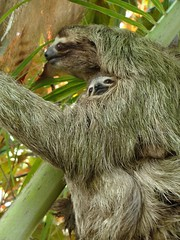

Español
Muchas gracias por su visita, y por acompañarnos en esta aventura!
Nos gustaría mucho recibir una email de ustedes - Mándanos en
Puedes ver una traducción de todo el website por haz click aquí
Hola desde La Patagonia

Saludos a todos nuestros amigos en Latinoamérica - hola desde Bariloche, en Patagonia, Argentina.
La última vez que mandamos una actualización fue a principios de Septiembre, y en ese entonces nos encontramos en Huánuco, Peru, pedaleando las maravillosas pero difíciles montañas del Perú. (Disculpe que no hemos mandado nada desde entonces!) Aquí está una actualización sobre lo que ha pasado desde entonces.
Pasamos una semana en Huancayo y Tarma, Perú haciendo trabajo como voluntarios para Kiva.org y Microfinanzas Prisma. Kiva fue el primer persona-a-persona website de microfinanzas en el mundo que ofrece la oportunidad a personas en el mundo desarrollado que puedan hacer préstamos directamenta (mas o menos) a micro-empresarios en el mundo en desarrollo. Pasamos la semana viajando por bus, taxi, 4x4, y a pié a lugares retirados en los altos y selvas altas del Perú para entrevistar a clientes. Fue divertido y aprendimos mucho conociendo un poco de que están haciendo Kiva y Prisma Microfinanzas.

Entonces continuamos por bici de Huánuco a Ayacucho, Perú, pedeleando por paisajes increíbles de montañas altas y valles de desierto. Pasamos campamentos de minería, pastores con llamas y ovejas, y muchos pueblitos abandonados, un resultado de la violencia del tiempo del conflicto entre en gobierno y el Sendero Luminoso de los años 80 y 90. Nos pareció un lugar muy pesado para vivir: sin agua, no fértil, sin sombra, y con un montón de moscas.
De Ayacucho continuamos por bus a Cusco, para evitar un tramo de ripio y polvo que cruzó cinco pasos muy altos por las montañas. Saliendo de Ayacucho, fuimos a comprar pan afuera del mercado y alguien robó la cámara de Nancy cuando estábamos allí viendo! (Ella compró otra para reemplazarla y está tomando muchas fotos lindas otra vez.)
Nuestra próxima aventura fue a la famosa Machu Picchu cerca de Cusco, donde pasamos por bus el Valle Sagrado de los Inca y por tren a Machu Picchu. Para experimentar completamente el empacto del sitio, subimos a pié del pueblito de Aguas Calientes, partiendo a las cuatro de la mañana. Y el sitio merece su designación como una de las siete nuevas maravillas del mundo - verdaderamente es un lugar de magia. Randy subió a Huayna Picchu mientras que Nancy se sentaba y capturaba todo con su equipo de acuarela.
Desde Cusco montamos por un paso y mucha tierras altas - el altiplano que queda cerca del lago Titicaca y la ciudad de Puno. Como todos los turistas visitamos a las islas retiradas de Amantaní y Taquile y pasamos una noche en la casa de adobe de una familia en la isla.

Continuando por la orilla del Lago Titicaca y nos encantaron las vistas de el agua de verde-azul - seguimos el lago casi hasta La Paz, Bolivia. Durante la semana que nos quedamos en La Paz, vimos manifestaciones por los campesinos exigiendo una nueva constitución. Las manifestaciones fueron completamente pacificas, pero no había ningun forma de transporte ese día. Tenían éxito - será un referéndum sobre la nueva constitución en Enero.
Nancy no podía quitarse de dolores de cabeza y corazón en las regiones montañosas, y por eso decidimos continuar en Bolivia por bus y tren. Fuimos al Salar de Uyuni, una maravilla que fue un mar y ya es un desierto, y visitamos muchos lugares - lagos de varios colores, terrenos extraordinarios con flamingos, termales, y paisajes extraños que inspiraron a Salvador Dali.
De Uyuni tomamos un tren a la frontera con Argentina donde montamos otra vez las bicicletas y seguimos (¡bajando de 3600 metros a 1300 metros de altura!). Por cuatro días pasamos tierras encantadas de formaciones de rocas coloridas, pavimento!, y muchas llamas y ovejas. Todo se hizo mucho mas fácil que en los otros países de los Andes: agua potable en la llave, agua caliente, vinos fabulosos, y buena carne. Acampamos al lado de una iglesia abandonada y detrás de unos árboles para escapar el viento. Cuando Randy se hizo enfermo con bronquitis, descansamos unos días en Salta en la casa de ciclistas allá (¡gracias, Ramón, Tina, y la familia Marín!). También pasamos dos noches con Tomás y Nadia (una pareja que se lista en Warmshowers.org). Por fin llegamos en el pueblito cerca de San Lorenzo, donde nos quedamos mas de una semana al Hostal Tatata, un verdadero paraíso. Randy se recuperó y hizo un poco de trabajo por internet (para diversión y también para ganar un poco de plata.) y Nancy hizo un proyecto de mucho dibujo y acuarela.
Por fin salimos de Salta y montamos 4 días al sur al centro de vinería famoso de Cafayate, y de Cafayate montamos solo un día mas antes de que tomamos la decisión de tomar un bus hasta Bariloche, en Patagonia, donde estamos ahora. Pensamos que este lugar tan bonito es mas o menos en término del viaje. Hemos llegado a Argentina, al sur (aunque una gran parte de Bolivia y Argentina fue por bus) y vamos a descansar aquí un rato - hasta enero - y proceder a Santiago de Chile para regresar a los estados unidos.
Como siempre, tenemos muchas historias en hobobiker.com - y hay una traducción automática de todo.
Y tenemos un montón de fotos, mucho mas que hay en el website:.
-
El Sur del Perú (o como slideshow)
-
El Salar de Uyuni (o como slideshow )
-
El Norte de Argentina (o como slideshow )
Muchas gracias a todos ustedes por seguir con nosotros! Siempre sentimos su amistad.
Gracias,
-Randy y Nancy
Saludos desde Huánuco, Peru

Nuestro punto mas alto del viaje: 4700 metros

Hoy cruzamos el punto mas alto del viaje hasta ahora, y tal vez el mas alto del viaje. Después de subir otra vez en los Andes (la Cordillera Blanca) por mas de una semana, cruzamos Abra Yana Shalla a 4700 metros. Habíamos llegado a esto poco a poco, subiendo no mas de 1000 metros por día cuando entramos a los lugares altos. Nancy sintió la altura en muchas maneras, y por eso tratábamos de cuidarla todo posible. Pero lo cruzamos esta mañana hasta los picos. Vimos mucho paisaje bonito en los últimos días y trataremos de subir mas fotos en unos dias.
Lucho y la Casa de Ciclistas en Trujillo, Peru

Cuando bajamos de las montañas de Perú para la costa, nos quedamos en la legendaria Casa de Ciclistas en Trujillo, Perú. Lucho Ramirez empezó ofrecer su modesta casa para ciclistas viajeros ya en 1984, y él está a un paso de completar la marca de mil huéspedes. ¡Mil grupos de ciclistas firmaron su diario y se quedaron allá a lo largo de 25 años! ¡Un ciclista se quedó un año! Muchos se quedaron por bien más tiempo del que esperaban, frecuentemente por una semana o más. Es un encanto hojear las páginas del diario y ver ciclistas famosos que nosotros conocemos u oímos decir que pasaron por aquí. Nuestros amigos Dick y Els, de Holanda, firmaron el libro cerca de 5 años atrás. Nuestro amigo Andrew lo firmó hay solamente un mes y poco. Nuestros amigos Pat y Cat también pasaron por aquí cerca de 3 años atrás.
Muchos de ustedes nos preguntaron si estábamos intentando quebrar alguno récord o cosa parecida, y la respuesta es no, vamos realmente bien despacio, y muchas y muchas personas fueron más lejos. Aunque ni todos los ciclistas que pararon en la casa de Lucho estuviesen haciendo viajes grandes como nuestra, muchos estaban haciendo muy mayores. Un compañero, Hans Stuecke, ¡ha pedaleado por 46 años!
Comoquiera Lucho ofrece un lugar extremadamente amigable para ciclistas paren, recarguen, tienen su equipo revisado, y generalmente tienen un recuerdo maravilloso. Dejamos nuestras bicicletas en seguridad allá durante nustra viaje hacia casa, y volvemos a encontrarlas esperándonos. Lucho también trabajó la noche toda para dejar nuestras bicicletas en orden y perfectos (es mecánico de bicicletas profesional). Y él tiene informaciones sobre todas las rutas, y sabe cuales lugares evitar debido a que ataques criminosos a ciclistas.
Lucho es también un increíble promotor del ciclismo en su ciudad. Organiza carreras de ciclismo para niños y adultos (ayudamos en una) y él mismo es corredor – él suele ser campeón en la área. Su hijo se llama Lance, si eso te da una pista.
¡Gracias, Lucho! Es famoso, y su fama es bien merecida.
Nota: Lucho tiene la Casa de Ciclistas original de Latinoamerica, pero él también inspiró otras. Nosotros nos quedamos en una en Cali, Colombia.
Aquí están algunos enlaces:
- Sitio de Lucho sobre la Casa de Ciclistas en Trujillo
- Lista de Casas de Ciclistas en Latinoamerica
- Nuestra visita a Casa de Cali, Colombia
- No se olvide de Warmshowers.org, el sitio de hospitalidad de lo cual Randy es webmaster. Personas de todo el mundo ofrecen hospitalidad a ciclistas viajeros a través de Warmshowers.


Una pequeña viaje hacia casa para ver a nuestra familia


Acabamos de llegar a Perú venidos de una estorbada viaje a Estados Unidos. Fue excelente y exhaustiva. Primero, tuvimos que enfrentar 10 horas de autobús para la cuesta de la Cajamarca, entonces más 8 horas de autobús de Trujillo a la capital de Perú, Lima. Entonces volamos por mucho tiempo hacia Boston, y llegamos a tiempo para el evento principal que apretaba nuestro viaje: el cumpleaños de 80 años del padre de Nancy, Frank Lewis. Fuimos para la cabaña del hermano de Nancy, Dan, en New Hampshire y vivimos una conmemoración deliciosa.
Entonces volamos hacia Denver para ver los hijos de Randy, Elisheba y Mark, y dirigimos hasta Grand Junction, Colorado, para ver los padres de Randy. Caminamos con ellos a vemos su nuevo lar en el retiro de edad Atrium, en Grand Junction – ellos tienen una linda cabaña, completa, incluso con más espacio del que tenían antes, garaje, y el confort de hacer las comidas en el propio retiro. Instalaciones muy buenas.
Entonces dirigimos de vuelta a Denver y tuvimos un encuentro con amigos que fue un encanto absoluto. Varios amigos vinieron a vernos, incluso un grupo de ciclistas viajeros que no conocíamos, Nick y Dave, dos impresionantes jóvenes que están para partir de Denver en el camino de Panamá. ¡Gracias a todos qué vinieron y también a los qué no pudieron venir por su amistad! ¡Gracias, Ann, por la deliciosa recepción de la fiesta!
Los últimos días fueron gastos en una tentativa frenética de organizar todo el equipo que queríamos llevar con nosotros (cosas más calientes para las montañas, cosas nuevas que encargamos y compramos, etc.) Fue increíblemente estresante para mí, especialmente cuando decidí llevar mi trailer BOB conmigo al revés de continuar usando alforges (historia por venir). El cambio representaba un pequeño riesgo, una vez que no usaba el trailer desde 2004 y él estaba abandonado en un canto del garaje de Elisheba. Estaba realmente con miedo de haber olvidado un algo que me impediese de usarlo, o que no me adaptaría, o que un algo se perdería en el viaje de avión que estorbase todo...no se ponía tan ansioso hace años. De cualquier forma, logramos empacar todo eso, embarcar en el avión, y traer de vuelta a Lima, viajar las 9 horas de autobús para Trujillo, y tener todo instalado en la Casa de Ciclistas nuevamente. (Todo funcionó, y estoy contento pilotando con el trailer. Escribiré más sobre eso después.)
Saludos desde el Perú


Saludos a todos nuestros amigos que hablan el castellano! Cruzamos la frontera del Ecuador al Perú el sábado y quisimos mandar una nota. Estamos bién y continuando al sur.
Teníamos muchas experiencias buenas en Ecuador, incluso un viaje a las Islas Galápagos y mas de 1200 kilómetros de viaje por bicicleta. Estaba bién duro todo. Las cuestas son verdaderas cuestas, muy pendientes, y tuvimos varios dias de camino de tierra. Pero, como siempre, serán los días mas duros que vamos a recordar más, con toda esa belleza. Las vistas fueron astombrosas y esperamos que nuestras fotos muestren bién lo que veíamos pasando por estas montañas.
Entramos al Ecuador desde Colombia en Tulcán y de pronto experimentamos un nivel mucho mas bajo de tensión sobre la seguridad. Aunque Colombia está seguro y no tuvimos ningún problema allí, siempre nos dábamos cuenta de su historia y la situación actual. (Esperamos que ustedes oyeron las noticias que 15 de los rehenes mas importantes de las FARC ya están libres!) Ecuador estaba tranquilo y seguro en casi todas partes. Al menos de Quito (una ciudad grande, con los problemas de grandes ciudades) no pensamos ni poquito en asuntos de seguridad - todo fue tranquilo.
Viajando hacia Quito (y mas tarde saliendo de Quito) la Panamericana tenía demasiado tráfico y se hizo molestante. Nancy nos llevó en una ruta hasta la parte del Rio Amazón del este del país, el Oriente, donde estábamos sin tráfico y tuvimos una experiencia buena, pero con carreteras muy pendientes y difíciles.
La mejor parte fue de Cuenca hasta la frontera con Perú. Decidimos tomar la carretera menos transitado por la sierra hasta Perú en vez de la ruta que donde van los demás de ciclistas (y carros), por la costa. Fue muy difícil y también una experiencia increíble. No estamos seguros que podemos aguantar este tipo de reto, pero este tiempo en la sierra del sur del Ecuador recordaremos siempre. (Aquí hay una traducción mala de la historia de Nancy sobre este tema.)
Y hasta ahora nuestra experiencia con Perú es muy amable. La gente está tan amigable y muy abierta. Nancy escribió sobre nuestros primeros dias - hay una traducción mala aquí.)
Como siempre, hay muchas mas fotos y historias en www.hobobiker.com, con malas traducciones en este enlace.
Puedes ver
Una cosa más: Queremos recordarles de nuestra caridad favorita, Agua para la Vida. Agua Para La Vida provee agua potable a aldeas muy retiradas en el campo de Nicaragua, y hace un buen trabajo. Si puedes darles algun tipo de apoyo, les damos gracias a ustedes.
Muchas gracias por ser nuestros amigos! Siempre pensamos en ustedes.
Un abrazo a todos,
-Randy y Nancy
Nuestro libro sobre Las Mujeres de Puente de Amistad en Guatemala

Hemos terminado la traducción a español de nuestro libro que trata de las increibles mujeres de Puente de Amistad, quienes conocimos trabajando en Guatemala en Junio y Julio del año pasado. Esas mujeres fueron tan impresionante y admirable. Por eso escribimos el libro, pero nunca tuvimos bastante tiempo para traducir a español y revisarlo. ¡Y las mujeres del libro nunca lo han visto! Pero en Quito pasamos casi una semana estudiando en el Cristóbal Colon Spanish School, y Randy tomó como su objetivo la traducción y revisión del este libro.
Usted puede leer el libro en forma PDF aquí. También es posible comprar una copia imprimida (a nuestro costo, sin ganancia) aquí en blurb.com. (Desfortunadamente no ofrecen pedidos a muchos paises, pero si a México y Argentina.)
Donde Estamos: Quito, Ecuador! Junio de 2008

¡Saludos a todos nuestros amigos que hablan español! Ya estamos en Quito, Ecuador después de un recorrido montañoso desde Medellín, Colombia.
Al contrario de todo lo que ustedes han oído sobre Colombia, hemos conocido nada mas que buena gente. Y no tuvimos problemas con la delincuencia ni narcotraficantes ni la guerrilla. Nos quedamos también en las casa de cuatro familias muy agradables que abren sus casas a ciclistas. Nunca olvidaremos la amistad y el cariño de esta gente. (Gracias a Jon y Ivo en Manizales, Gonzalo y toda la familia en Armenia, Miller y su familia en Cali, y a Santiago y su familia en Popayán. Ustedes nos dieron una experiencia increíble en Colombia.)
De Medellín pasamos a Manizales (que queda muy alto) y Armenia, Cali, y Popayán. De Popayán tomamos un bus para visitar al sitio arqueológico de San Agustín. Allí vivían desde 2000 A.C. hasta 700 D.C. una cultura increíble, y su esculturas nos hizo recordar la escultura de los Olmec del este de México.
Antes de Popayán habíamos experimentado montañas y grandes cuestas, pero de Popayán h la frontera con Ecuador fueron increíbles subidas y vistas, valles, y barrancos enormes. En un solo día tuvimos que subir hasta 3000 metros o más, bajar a 900 metros, y empezar a subir de nuevo. Pero el paisaje fue de lo mas bonito que hemos visto en nuestro viaje. (En todo nuestro recorrido desde Canadá decíamos que todo era práctica para las Andes, y ya que estamos aquí reconocemos que decíamos la verdad! Pero aunque es duro, también es bonito, interesante, y emocionante. Y estamos muy orgullosos que lo podemos hacer.)
Del sur de Colombia hasta Quito experimentamos una ola de invierno -- el tiempo siempre estaba nublado y no pudimos ver los grandes volcanes que dominan a Pasto e Ipiales (en Colombia) e Ibarra, Otavalo, y Quito (en Ecuador). La lluvia y llovisna aumentó al punto de estar incómodo a veces. Pero esperamos que cuando empecemos de nuevo tendremos el tiempo agradable del verano, con cielos azules para que podamos ver el volcán Cotopaxi y todos los demás que nos esperan al sur.
En el norte de Ecuador cruzamos el ecuador, a un latitud de 0! Hace casi dos años cruzamos el Círculo Ártico, y ya llegamos al ecuador! Hay fotos de nosotros en los dos lugares aqui
Mañana vamos a iniciar un tour de las Islas Galápagos (por avión y barco pequeño) para conocer esas islas fantásticas y su fauna increíble. Regresaremos en una semana con las cámaras completamente llenas y tal vez les tendremos que mandar otro correo.
Y entonces empezaremos de nuevo nuestro viaje al sur. Nos faltan todavía 700 kilómetros de pueblos, paisaje, y cultura en Ecuador antes que lleguemos a Perú. Todavía nos faltan mas o menos 9000 kilómetros hasta que lleguemos a la Patagonia en Argentina y pensamos que con un poco de disciplina podremos llegar allá en Marzo del año que viene, antes de la llegada del invierno allí.
Una cosa más: Queremos recordarles de nuestra caridad favorita, Agua Para La Vida. Agua Para La Vida provee agua potable a aldeas muy retiradas en el campo de Nicaragua, y hace un buen trabajo. Si puedes darles algun tipo de apoyo, les damos gracias a ustedes.
Gracias por seguirnos por email! Mándenos una nota cuanto nos piensen.
Nuestras fotos ya están actualizadas:
- Segunda parte de Colombia (o como slideshow.)
- Ecuador (o como slideshow.)
También los mapas y perfiles de altitud están
aquí.
Siempre hay muchas historias en nuestro sitio http://hobobiker.com/espanol, y puedes leer una mala traducción de todas las historias en este enlace.
Gracias!
-Randy y Nancy
Colombia: Llegamos a Medellín

Hola de Randy y Nancy (Hobobiker.com) en Medellín, Colombia
¡Saludos a todos desde Medellín, Colombia! Nos estamos disfrutando mucho de este país tan bello, amigable, y hospitalario.
Aquí es una actualización sobre lo que nos ha pasado en el último mes.
- Nancy regresó de su viaje a California, Estados Unidos que hizo para cuidar a su padre. Él queda feliz, con salud, y ha regresado a su casa en Massachusetts. ¡Gracias a Diós!
- Pasamos en un velero desde Panamá a Cartagena, Colombia en el Stahlratte, un buque de mas de 100 piés. Pasamos dos dias de esnorkel en las islas de San Blas, y después pasamos (bién mareados) a la ciudad de Cartagena, Colombia.
- Después de solo un día en la ciudad famosa por tesoro español, comenzamos montando el las tierras bajas de la parte caribe de Colombia hacia los Andes. Pasamos una semana en calor hasta 40 grados y mas, y llegamos al pié de los Andes y empezamos a subir.
- Subimos desde el nivel del mar hasta 2800 metros s.n.m, desde un clima que fue lo mas caloroso que hemos experimentado hasta lo mas frio en mucho tiempo.Vimos montañas y paisajes hermosos.
- Después de algunos dias de las montañas bajamos a la ciudad de Medellín, una ciudad muy hermosa, segura, y amigable. Hace muchos años fue un centro de las drogas, pero hoy es una ciudad moderna y linda.
Ya vamos a pasar mas o menos seis semanas cruzando al sur de Colombia. Es un gran país, y tal ves nos va a demorar mas de eso.
Hay nuevos fotos: El Velero "Stahlratte" de Panama a Colombia y nuestros fotos de Colombia hasta Medellín.
Gracias por seguirnos! Siempre nos agradece que ustedes nos siguen. Mandanos un email cuando piense en nosotros.
-Randy and Nancy
Saludos de Panamá

Un peresozo y su bebé en
Costa Rica
Ya alcanzamos mas o menos la mitad del viaje. Hemos viajado en bici casi 16,000 kilómetros desde el inicio del viaje en Inuvik, Canada el 9 de Junio de 2006.
Llegamos en la capital de Panamá hace dos semanas y ya estamos descansando antes de continuar en America del Sur. O sea, Randy está descansandose. Nancy regresó por avión al estado de California, en los Estados Unidos, apra ayudar a su papá, quién ha estado enfermo (y que ya está mejorando). Ella está ayudando con toda su cuida ya que ha regressado a la casa del hermano de Nancy.
Nancy regresa en los principios de Abril y intentamos ir por bote a Cartagena, Colmbia, para empezar la parte de Suramérica. Originalmente no habíamos planeado visitar a Colombia por razón de la supesta inseguridad, pero hemos oido de muchos viajeros y otros fuentes que la situación ha mejorado bastate y que el país es maravilloso para visitantes. Claro vamos a tener cuidado.
Hay nuevas fotos para ustedes: fotos de Costa Rica y Panama and las de Nicaragua
Y el mapa de nuestra jornada en America Central está completo para que puedes ver nuestra ruta exacta.
También hay muchas historias en Hobobiker: www.hobobiker.com. Claro que los demás son en inglés, pero hay malas traducciones aquí. Hay historias (también mal traducidas) de la organización Nicaragüense Agua Para La Via aquí.
Después de salir de Rio Blanco, Nicaragua (donde visitamos y fuimos voluntarios para Agua para la Vida) pasamos al centro turístico Granada, y de allí fuimos por barco a la isla de Ometepe, un lugar precioso para pasar algunos dias turísticas. De allí fuimos por barco al fondo del Lago de Nicaragua y cruzamos la frontera de Costa Rica, donde empezamos a montar con mas fuerza. Llegas después de unos dias a Cahuita, una aldea al lado del caribe del país antes de descansar, y entonces continuamos cruzando la frontera de Panamá. Allí en Bocas del Toro tuvimos la oportunidad de hacer snorkel y vimos corales de colores tan brillantes que nunca habíamos visto antes. Después cruzamos las montañas a la carreterra panamericana (al lado del Pacífico) y pasamos varios dias yendo a la capital de Panamá. El paisaje se cambió de un mundo rural y centroamericano an mundo urbano, con grandes almacenes y anuncios al lado de la carreterra. Por fin cruzamos (con ayuda de una patrulla de policia!) el Puente de las Americas que cruza el canal de Panamá y llegamos a la ciudad, que es grandísimo y moderno, con grandes skyscrapers de acero y vidrio en todas partes, como la ciudad de Miami en Florida en los Estados Unidos. De hecho parece que Panamá podría competir con Miami como un centro comercial y de negocios para toda América Latina.
Tenemos muchas esperanzas y miedos para la parte próxima del viaje. Esperamos pasar todo la región de los Andes de sudamérica en el año que viene, llegando en Ushuaia, Argentina (en Tierra del Fuego, la Patagonia) en Marzo de 2009. Nuestros temores no son de ladrones ni de la delincuencia, pero de las montañas grandes y altitudes increibles que vamos a encontrar en los Andes. Pero llegamos hasta aquí...
ve to work with in the Andes. But shoot, we've made it this far...
Una cosa mas: Nuestra visita a Agua para la Vida en Nicaragua fue tan impresionante que vamos a mencionar esta organización en nuestros correos y en el website. Tal vez ustedes pueden considerar un poco de ayuda a Agua para la Vida para que puedan proveer mas agua potable para las aldeas remotas de Nicaragua. Una donación de cualquier tamaño ayuda mucho. Usted puede aprender mas, inclusive como donar, en aplv.org (vee la sección en español).
Pués, muchas gracias por acompañarnos. Mandanos en email cuando piensas en nosotros, y les damos nuestos saludos desde Panamá!
Gracias,
-Randy and Nancy